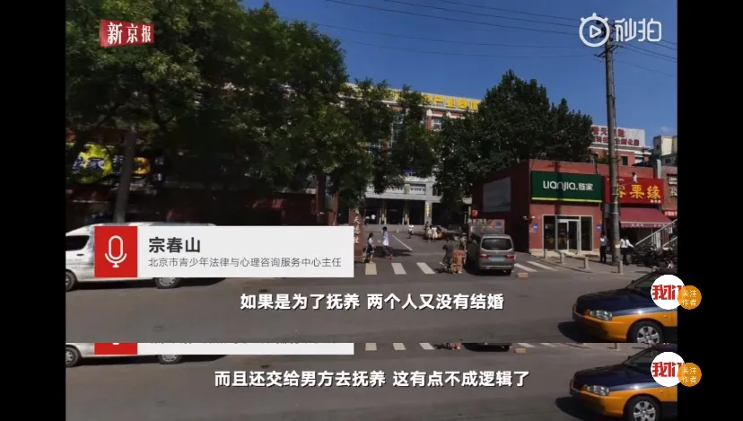
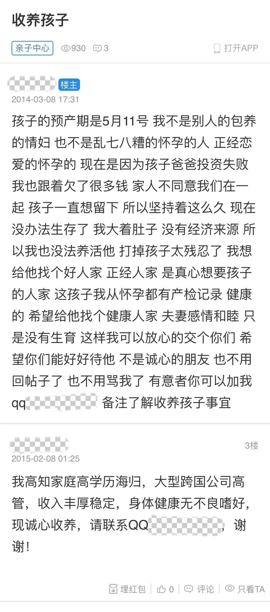
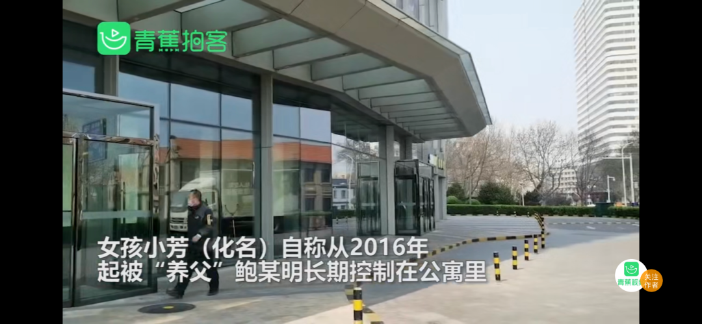
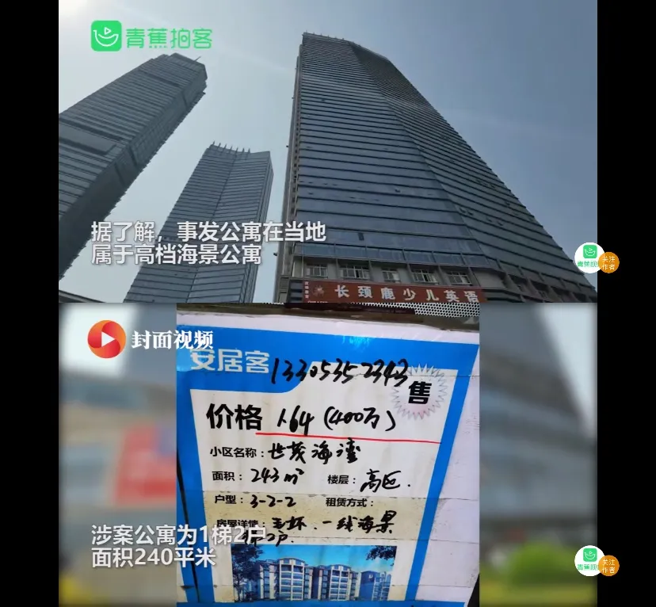
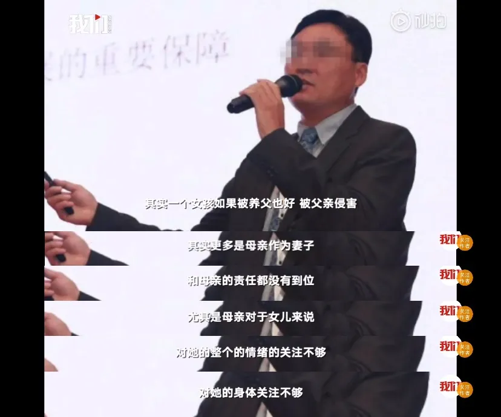
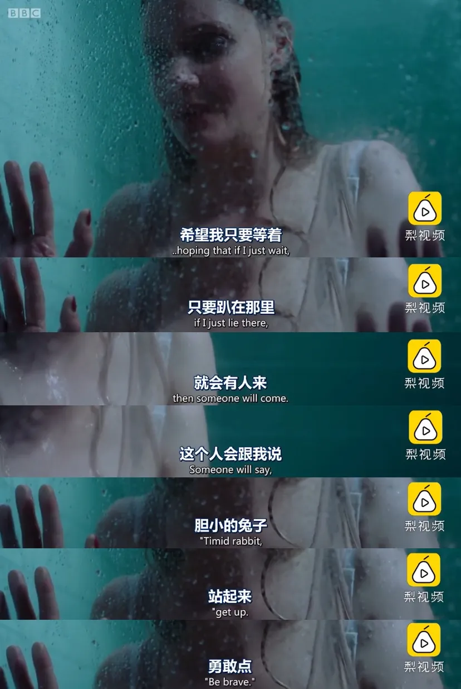
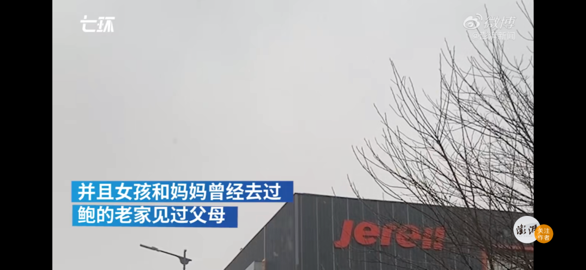

“高管性侵养女事件”再调查
近日，南风窗、澎湃新闻、新京报等多家媒体报道，原杰瑞副总裁鲍毓明涉入性侵案，对方是他的“未成年养女”李星星。报道引起了各界重视。
烟台警方迅速回应。4月11日，烟台市公安局发布通报称，已组成工作专班进行全面调查，调查结果将及时公开。
“性侵养女案”的全貌正在显现。
在第一篇报道发出之前，南风窗记者尝试联系鲍毓明，听取他的回应，但他获悉记者身份后迅速挂断了电话。4月11日，在司法程序跟进的同时，鲍毓明接受了采访，并对外“喊冤”。
昨日南风窗记者赶赴烟台，通过中间人牵线，鲍毓明也回应了南风窗记者提问，称将“适当做些维权工作”。
事件各方的动作“加速”，北京千千律师事务所律师、李星星的代理律师吕孝权表示，他们计划两天内赶赴南京，与李星星母女敲定事项，以维护李星星的合法权益。
李星星也回复南风窗记者说，接下来的几天，她将配合烟台警方做笔录，要把精力用来关注案件进展。
尘埃还未落定。截至目前，双方互相指责对方，对事件的细节有不同描述。总体上看，这是个超乎想象的事件，不仅在于事情的复杂性，还在于那常人无法理解、也很难获得谅解的特殊关系。
美籍高管求“收养孩子”
2015年，李星星14岁。那一年，鲍毓明43岁。
她告诉记者，在2015年的最后一天（12月31日），她被鲍毓明强奸了。那是在鲍毓明天津的家里，他一把控制住她，强行发生了性关系。她在疼痛中一夜没睡。
此后，鲍毓明把她带回北京，整天把她关在家中。此后4年相处之中，有大概3年时间鲍毓明对她实施了控制、性侵。
鲍毓明出生于1972年，和李星星的年龄差了29岁，两人本来是天南地北的陌生人。据李星星说，他是以“养父”身份出现的。
2015年4月，李星星母亲经人介绍，认识了鲍毓明。李星星母亲回忆，那时，鲍毓明说自己想要个孩子，过不久，他又说想和李星星母女“组成家庭”。

李星星回忆，在2015年11月，她被鲍毓明带到北京上学，两人以“养父”“养女”的身份相处，直到元旦前夜发生了性侵。
从此，在这段离奇的关系中，李星星与鲍毓明相处的时间大概有3年。
李星星控诉称，她在这段时间，受到了控制和长期性侵。在她成年以前的这3年里，她生活的重心全在鲍毓明，带给她的却是身心的摧残。
4月11日晚，鲍毓明回应了南风窗记者，他并不否认与李星星的这段“亲密关系”，但拒绝承认是“养父”“养女”关系。
关于李星星未成年时，他们是否有过性行为？鲍毓明表示，这属于“个人隐私”，不方便多说。
但他提供了另一个故事版本。关于双方最初的认识，鲍毓明表示，根本没有中间人介绍，他也不认识李星星母亲。
回到2015年，鲍毓明说，他当时想收养一个小孩，就在一个帖子中留了QQ号，李星星母亲在网上看到留言，加QQ找到了他。
“那是2015年9月的事，我们才第一次有了交流”，鲍毓明说。
事实上，事情的起因还要更早。根据QQ号码，南风窗记者搜索到2条鲍毓明发布的【诚心收养孩子】的帖子，发布时间是2015年2月8日凌晨，其中写道：“高知家庭高学历海归，大型跨国公司高管，收入丰厚稳定，身体健康无不良嗜好，现诚心收养，谢谢！”在回帖中，他留下了他的QQ号。

“高知家庭高学历海归”是真的，财新的报道披露，鲍毓明是天津人，1972 年出生于一个知识分子家庭。从天津大学硕士毕业后，他赴美留学，在美国纽约与加州工作近10年，取得了美国国籍和中美两国律师执业资格。
关于2015年年末那一次发生关系，鲍毓明没有否认。但他表示，李星星在2015年没来过北京，她是2016年元旦过后才来的。时间对不上。
而按照李星星的说法，她初次遭遇“强奸”后，不久后拿回手机，报了警。鲍毓明一度“消失”，她以为是警察带走了他。但是，鲍毓明再次回到了家。
对此，鲍毓明表示，李星星第一次报警，大概是在2016年6月份，是夏天。
鲍毓明在2016年4月到了杰瑞集团工作。他解释说，换到这家山东烟台的民营企业，他的空闲时间就没以前多了。但是，李星星还像从前一样，特别喜欢找他聊天，一聊就是一个小时。他疲于应对，对李星星说“你要理解工作的人”。他不能再长时间地聊天，有时打个招呼就睡觉了。
“她就觉得对她冷淡了，跟我吵架。后来我一生气不理她，她以为我怎么着了，结果她就报警”，鲍毓明说。
他还提到，“在这之前，（2016年的）2、3、4、5月份，我们天天聊得好极了”。
鲍毓明还强调说，他们主要是在QQ上聊天，而见面的次数和时间很少，“可能几个月见一次面，短了两三天，长了三四天、四五天，然后就分开。最长的一次，两人待在一起一个月”。

他以此表示，李星星一直是自由的。
李星星的记忆却完全相反，她说，在北京报警过后，鲍毓明对她严格监控。
她的学业被停下，母亲打来电话，她也要在鲍毓明的注视下接听。李星星描述，之后她在烟台的生活，她完全丧失隐私。鲍毓明给她看儿童色情片，对待她时喜怒无常。
鲍毓明不满李星星的描述，“按她说的，又虐待又监禁，把我表述成了恶魔”。他表示，他有足够的证据“戳穿谎言”。
据鲍毓明说，他在烟台家里装了监控，生活状态一清二楚。这个被李星星理解为监禁工具的设备，在鲍毓明看来，反而是有利的证据之一。
“要不有聊天记录，要不有电话录音，要不有视频监控”，他说，他可以证明，两人的生活是美好的。他表示，自己已将证据交给了警方。
不同寻常的“关系”
鲍毓明接受媒体采访时说，了解他的人都觉得，他的人品非常好，（这件事）是他被坑了。
至此，双方都承认了“亲密关系”。在李星星未满18岁时，鲍毓明与她多次发生性行为。鲍毓明虽以“隐私”为名，但始终没能否认，在言辞之中其实也得到确认。不过，对过程的描述上，双方存在较大区别。
最大的区别在于，两人相处的时间与次数。按照李星星此前的描述，她在2016年被鲍毓明带到烟台，被控制并多次受到性侵，她被这段关系困了3年。
鲍毓明直言，他在烟台的房子是2017年夏天买的，此前他一直在公司吃住，“（李星星）2016年没来过烟台，第一次来是2017年的七八月份。没有房子，她来了住哪儿？”但是，他尚未提供购房时间的证明。
他也否认监禁了李星星。
“我白天要上班，她手里有钥匙、房卡，她自己一高兴，自己下楼去海边玩，去图书馆看书，我还去接她。这都是有交流证据的”，鲍毓明说。

对2016-2018年的诸多细节，双方各执一词，而随着关系的变化，到了2019年，李星星多次以“强奸案”报警。
在此期间，她经历了立案、撤案、再立案，多次因崩溃尝试自杀。
也是在2019年，李星星开始对外求助。北京、南京、烟台、深圳的众多机构与人员，曾先后救助过她，但案件的推进依然曲折。
南风窗记者采访了数名前后参与救助的人员，他们以第三方的视角，补充了这一复杂案件的相关细节。
“构成强奸案的证据不足”，这可能是案件推进艰难的最重要原因。2019年2月左右，周桃律师援助过李星星，跟进了半年左右。据周桃讲述，李星星在南京报了多次警，南京警方为她付出了很多。
李星星及其母亲曾表示，身份证上的出生时期，不是李星星的真实生日。“性侵发生时，如果如同她们母女所述的，李星星未满14岁，情节认定就容易多了”，周桃说，南京警方专门去了李星星老家，找到村子里的接生婆，但接生婆否认了李星星的生日晚于记录。
周桃称，南京警方还对李星星做了骨龄鉴定，但结论依然不支持母女的说法。
“强奸案”难以认定，正对应了烟台芝罘警方的说法。
据烟台市公安局芝罘分局4月9日的通报，李星星2019年4月8日在当地报案，称她三年来被“养父”多次性侵。公安局在4月9日立案，然而经过侦查，认为鲍毓明不构成犯罪，在4月26日撤销了案件。5个月后的10月9日，芝罘区公安局再次立案。
撤案期间，李星星尝试自杀，李莹律师证实了此事。
据李莹讲述，那是2019年6月，李星星在烟台跳海，“我们特别担心，赶紧联系到她母亲，她母亲也赶紧找她。结果还好，有人把她救回来了，我们也找到了她”。在此期间，李莹帮她联系医院和心理医生，劝她接受治疗。
“那时李星星多次报警、多次自杀，她有严重的抑郁焦虑，是很明显的PTSD的反应”，李莹说。在撤案期间，她用了很多精力帮助李星星。
鲍毓明也对李星星的自杀做了回应，但他认为，李星星经常“假自杀”，以“达到她不可告人的目的”。
他对媒体回忆说，2019年4月份，李星星给他发了张网络图片，是一张割腕自杀的照片。他急忙冲进屋子，但李星星什么事也没有。他还表示，“假自杀”事件发生过好几次。
但是，李莹表示，她看到了女孩的病况、女孩的痛苦。她相信李星星的说法，于是决定帮助她。
过程并不顺利。除了“证据不足”，女孩一方的配合度也有问题。因为涉及到未成年人，李莹没有就此案透露详细情形。
据南风窗记者掌握的一份录音显示，曾经帮助过李星星的一名人士透露，在2019年住院期间，也就是芝罘警方撤案之后，李星星仍然瞒着母亲、瞒着帮助她的人，从南京买票到烟台，去找鲍毓明。
李莹也有类似疑惑，在她帮忙期间，李星星还没成年，但李星星的母亲存在感很弱，导致了诸多不便。李莹接受《中国新闻周刊》采访时说：“她不反对让母亲参与进来，也没有阻止我们和她母亲联系。她的状态给人感觉是：母亲也决定不了什么，她可以自己决定。”

鲍毓明也表示，2019年4月，李星星在烟台报案后，他们两人还同吃同住了两个月，私下里仍然很亲密。
受制于证据和女孩配合的问题，周桃律师表示，她后来就退出了救援工作。但这不影响她认为女孩是一个受害者。
女孩的确有性格上的特别之处，过去几位曾给过她援助的人都向记者表示出这一观点。
李莹律师在南风窗专访中分析，这种性格问题以及她与鲍毓明关系的反复以及依赖，理论上可能来自对方的控制与洗脑，以及心理上合理化现实的需要，这在过往她代理的性侵案件中多有出现，受害者的许多行为，本人也无法解释，直到事后走出困局和创伤后才能认清。
这一点，4月12日有媒体报道，同时也指出其中有斯德哥尔摩综合征——受害者依赖施害者的痕迹。
关注受害女孩的处境
对于女孩的行为复杂性，李莹其实早有心理准备。
她办理过数起未成年性侵案，受害人呈现出一个共同特点：“她被性侵了以后，她就得让自己去爱上对方。因为只有爱上对方，她才能够为自己这个行为找到合理性。”
回到“性侵养女案”本身，鲍毓明与李星星是否发生性行为，获得证据并不困难。但是，对两人关系的认定，影响到鲍毓明是否“强迫未成年人发生性行为”，也影响到这是不是一场借助优势地位、父女关系掩护而实施的乱伦侵犯。在这里，目前的司法实践中，还有相当大的回转空间。
多名法律人士对南风窗记者分析，两人相处了几年时间，鲍毓明可能收集了相当多的证据，来表明女孩并不是被胁迫的。又或者，他主张两人是在谈恋爱。如果成立，他或许就能避开法律风险。

4月11日中午，鲍毓明回应南风窗记者提问，他首次主张说，他与李星星确系恋爱关系。
从2015年发出“收养”帖子，到目前他所主张的“恋爱关系”，这一转变是如何发生的？
鲍毓明给出的解释是，他当初想收养小孩，2015年10月去南京见到李星星母女，李星星长得一米七高了，他觉得这么大了不好相处。但李星星对南风窗记者称，她的个子是在2018年才长起来的，2015年的时候自己体重大概只有70斤。
按鲍毓明的说法，尽管“大了不好相处”，但是，两人相处了下来，于是去办理收养手续。
至此，按照鲍毓明的解释，他确实是要收养李星星，初衷是确立养父女关系。
然而到了后来，因为鲍毓明是单身，他们不能办理收养手续。鲍毓明说：“李星星的妈妈就说，那就等李星星到了年龄办结婚手续，反正都是一起生活。李星星本人也说，愿意这样陪我一辈子”。
鲍毓明解释说，他想到自己是单身，“如果将来感情真能发展到那一步，也不是不可以”。所以，两人开始了来往——尽管这种想法正常人确实很难理解。
他表示，在2017年10月，他带李星星见了父母，征得了父母的同意，“等她到了年龄就结婚”。——按鲍毓明说法，此时两人已经是“恋爱关系”。

鲍毓明姐姐表示鲍毓明和女孩非养父女关系，女孩及其妈妈都曾去过鲍毓明的老家见过父母
鲍毓明提到，2019年初，他按照李星星的要求，给她送了订婚钻戒。
“我也为了等她而一直单身，没想到最后等来的是这场灾祸。”鲍毓明说。
到现在，鲍毓明明确给出了故事的“恋爱版本”，但疑点很多。
需要注意的是，“恋爱版本”是鲍毓明的单方说法，而李星星的母亲对此否认。
她接受澎湃新闻采访时说，她将李星星交出去“送养”，要求对方以亲生女儿对待。鲍毓明取得了李星星的好感，但一直拖着不办收养手续。
另外，“恋爱版本”无法解释，在2019年初，李星星才收到了订婚钻戒，她为什么会在3个月后自杀、接着报警？
4月11日深夜至今，南风窗记者无法再次与他取得联系。
案件还在侦查中，具体细节还需进一步披露。据李星星表示，4月12日，烟台警方已到达南京，她将再次做笔录。
李莹仍然担心李星星的身心状态，尽管在她的援助过程中，也遭到了女孩的不配合，但她说：“我没有任何指责她的意思。性侵这件事，会给人带来终身的影响，有很多的当事人，她们的人生真的是毁掉了。”
李星星还不满18岁时，就被母亲“送养”出去，或许那是为了一个更好的未来。但在她的人生尚在开垦的年纪，遇见的却是鲍毓明。
4年过去，李星星变成一个极度戒备的女孩。“她为什么会长成这样？”李莹质问。
事件仍在发展中，最终事实尚未彻底明朗。南风窗记者将持续追踪此案。
（李星星、周桃是化名）
作者 | 南风窗高级记者 向由
编辑 | 南风窗常务副主编 李少威
排版 | 阿丽菜
图片 | 部分来源于网络
南风窗新媒体出品
原网址: 访问
转载请注明来源，欢迎对文章中的引用来源进行考证，欢迎指出任何有错误或不够清晰的表达。可以在下面评论区评论，也可以邮件至 memo_hanabi@outlook.com
文章标题:“高管性侵养女事件”再调查
文章字数:4.6k
本文作者:南风窗
发布时间:2020-04-11, 20:54:32
最后更新:2020-04-15, 20:03:59
原始链接:https://mmspace.now.sh/re-investigation-of-sexual-abuse-of-senior-executives/版权声明: "署名-非商用-相同方式共享 4.0" 转载请保留原文链接及作者。